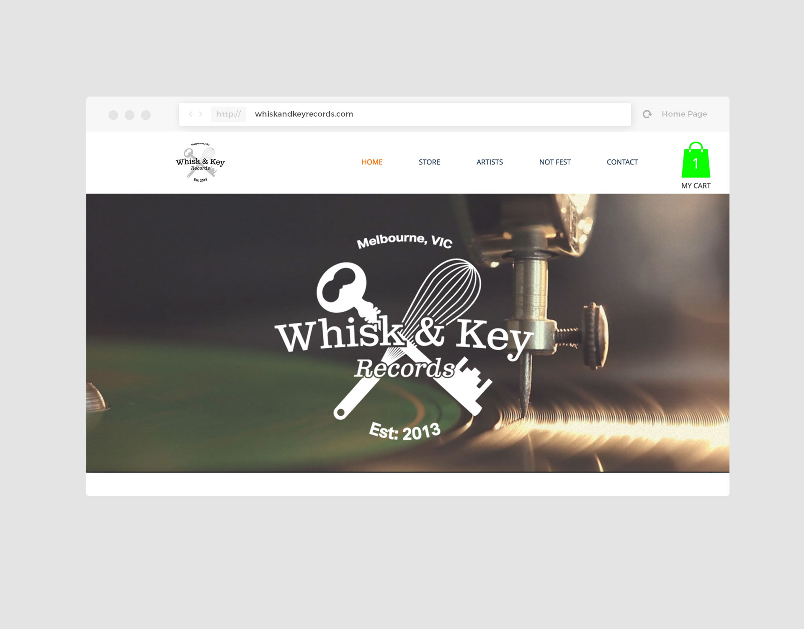

Whisk and Key Records
Introduction
Whisk and Key Records are a independent record label that could almost be better described as a living organism made up of a community of artists working together to create something great.

As such the website needed to move and flow through information and images to represent what they do and the people involved. As new information needs to be added regularly, the design needed to be simple and clutter free, while still allowing for multitudes of different aspects on each page.

Simple navigation through the artists' pages and store items is key, while ensuring that the artistic nature of the label was never given the back seat.

Visit: www.whiskandkeyrecords.com